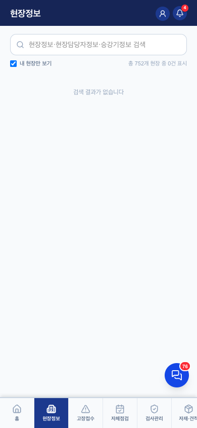

현장정보 v0.1
1. 이 화면의 정체 — 현장의 백과사전 (조회 중심)
- 구조: 목록 → 현장 상세(담당자·접근정보·비고·호기 목록) → 호기 상세(기본정보·고장이력·검사이력·부품교체·견적)
- 기사 기본 "내 현장만"(해제로 전체 — 미배정 선착순 대응용), 관리자는 토글 없이 전체 (2026-08-04 확정·반영)
- 계약종료 현장도 목록에 남음(이력·참고용) — 빨간 종료일 표시. 실무 화면(자체점검 등)에서만 제외
- 기사가 수정 가능한 건 비고·접근정보(열쇠위치·비밀번호)뿐 — 나머지는 콘솔에서
2. 화면 요소

| 요소 | 핵심 규칙 |
|---|---|
| 통합 검색 | 현장명·주소·연락처 + 담당자정보 + 승강기정보(모델·고유번호)까지 한 검색창. "내 현장만"과 AND |
| 현장 카드 | 이름·호기 수·주소 + 계약구분 뱃지(FM·2회점검 — 099 이후) + 계약종료 빨간 표시 |
| 현장 상세 | 담당자(역할·연락처), 접근정보(열쇠위치·비밀번호 — 현장 출동 필수 정보), 현장직/사무직 비고 분리 |
| 호기 상세 | v2 units 기반(모델·설치일·고유번호·보험) + 비상통화장치 번호. 고장·검사(실시간 이력 포함)·부품·견적 이력 탭 |
4. QA 체크포인트 — 2026-08-04 검증 (QA-RULES 3장)
- ✅ 기사 기본 "내 현장만" + 관리자 토글 숨김 (2026-08-04 수정·검증)
- ✅ 검색 AND 조건
- ✅ 계약종료 표시 유지 (실무 화면 제외는 별도 — ssj910 처리)
6. 화이트라벨 — 구일전용 → 타사 일반화
전부 DB 데이터 기반 — 화이트라벨 대상 없음 (QA-RULES 3장 결론 그대로). 실시간 검사이력만 홈과 같은 플래그 공유.
변경 이력
| 버전 | 날짜 | 변경 |
|---|---|---|
| v0.1 | 2026-08-04 | 최초 작성 — 3단 드릴 구조, 기본값 확정(내 현장만) 반영, 접근정보의 실무 가치 명시 |